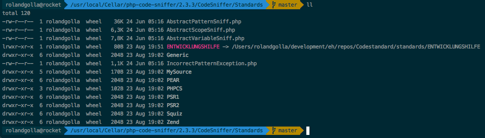
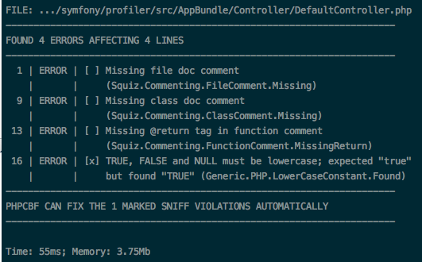
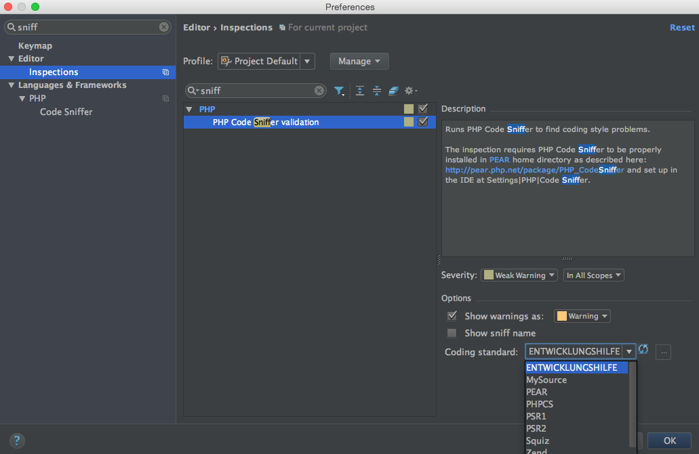
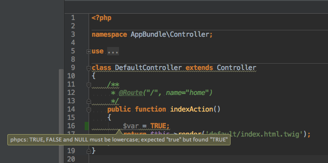
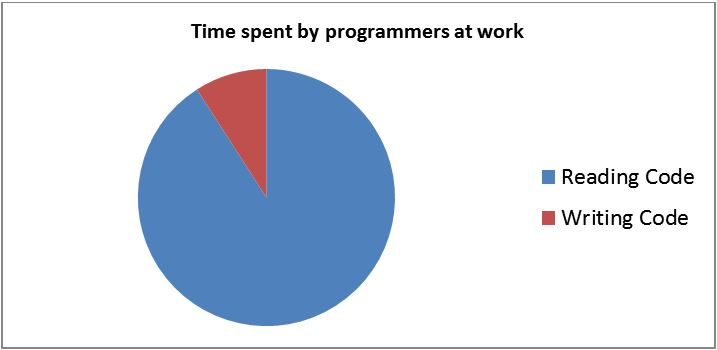

Clean Code
Entwicklungshilfe
Clean Code
- Codestandard Codesniffer
- Code conventions
- Reviews
- Clean code
Codestandard Codesniffer
Installation Codesniffer
brew install php-code-sniffer
phpcs -i
The installed coding standards are MySource, PEAR, PHPCS, PSR1, PSR2, Squiz and Zend
Codestandard
ruleset.xml PSR2
The PSR-2 coding standard.
...
https://github.com/squizlabs/PHP_CodeSniffer/blob/master/CodeSniffer/Standards/PSR2/ruleset.xml
Codestandard
ruleset.xml Entwicklungshilfe
warning
Codestandard
Sniffs
/**
* Class Entwicklungshilfe_Sniffs_Debug_NoDebugVarsSniff.
* This will find debug vars in php code.
*/
class Entwicklungshilfe_Sniffs_Debug_NoDebugVarsSniff implements PHP_CodeSniffer_Sniff
{
public $error = true;
protected $patternMatch = true;
protected $forbiddenFunctions = array(
'^var_dump$' => null,
'^die$' => null,
'^exit$' => null,
);
...
}
https://github.com/Entwicklungshilfe-NRW/Codestandard/.../Sniffs/Debug/NoDebugVarsSniff.php
Codestandard
Integration Codestandard
phpcs -i
The installed coding standards are ENTWICKLUNGSHILFE, MySource, PEAR, PHPCS, PSR1, PSR2, Squiz and Zend
Codestandard
Run Codestandard
phpcs --standard=ENTWICKLUNGSHILFE DefaultController.php -s
Codestandard in PhpStorm
Codestandard in PhpStorm
Codestandard benefits
Much better code structure
Much better reading
Provide rules in team and vote for it
Everybody starts to think about code
Good for the team spirit
Start for Clean Code
Code conventions
AHH
OHH
Code conventions
AHH
OHH
Code conventions
AHH
$page_id
$order_by
$cat_language
OHH
$pageId
$orderBy
$catLanguage
Code conventions
AHH
TRUE
FALSE
NULL
OHH
true
false
null
Code conventions
AHH
$params
$tot
$tmpl
$retval
OHH
$parameters
$total
$templateFile
$return
$return = true;
return $return;
Code conventions
AHH
OHH

Code conventions
AHH
$aConfig
$sTask
$oUser
OHH
$config
$task
$user
Code conventions
AHH
and
or
OHH
&&
||
Code conventions
AHH
if($a == 1) {
$this->makeEverythingOk();
}
OHH
if($a === 1) {
$this->makeEverythingOk();
}
Code conventions
AHH
OHH
Code conventions
AHH
$var = $foo ? $foo : $bar;
OHH
if($foo != null){
$var = $foo;
} else {
$var = $bar;
}
Code conventions
AHH
$var = $foo ?: $bar;
OHH
$var = $bar;
if($foo != null){
$var = $foo;
}
Code conventions
AHH
$var = $foo ? $foo : $bar;
$var = $foo ?: $bar;
OHH
if($foo != null){
$var = $foo;
} else {
$var = $bar;
}
$var = $bar;
if($foo != null){
$var = $foo;
}
https://en.wikipedia.org/wiki/Elvis_operator
"PHP 5.3.0 Release Announcement". Retrieved 2014-02-17. Syntax additions: NOWDOC, ternary short cut "?:"
Code conventions
Talk about simple things in your team
Vote for the new rules
Save the rules to a wiki
Start doing it just in time
Code pain
Technical debt
The day will come
Hard to debug
Bad performance
Exploding costs
Company harmony will be destroyed
The relationship to the client will be differnt in the future
AND SO ON!!!
Code cleanup
$categories = array(
'marken' => 'brands',
'bad' => 'bathroom',
'kueche' => 'kitchen',
'leuchten' => 'lights',
);
foreach ($categories as $categorie => $translation) {
$contentVar = array();
@include_once('de/megamenu/'.$categorie.'/content.php');
$php_content .= '\'' . $translation . '\' => \'' . addcslashes($contentVar['megamenu'],"'\\") . '\',' . PHP_EOL;
echo 'include megamenu ' . $categorie . PHP_EOL;
}
Where is the pain?
if($clerk == 1){
$btstep3data->setCustomerid(1);
$GLOBALS['TSFE']->fe_user->setKey('ses', 'btstep3data', serialize($btstep3data));
$GLOBALS['TSFE']->fe_user->storeSessionData();
$this->redirect('btstep4a');
}else{
$btstep3data->setCustomerid(0);
$GLOBALS['TSFE']->fe_user->setKey('ses', 'btstep3data', serialize($btstep3data));
$GLOBALS['TSFE']->fe_user->storeSessionData();
$this->redirect('btstep4');
}
Dublicate content is horror
Think about copy & paste and be awake in this moment
public function preparePrint($id) {
$returnedtag = Mage::getModel('glsbox/shipment')->getCollection()->addFieldToFilter('id', $id)->getFirstItem()->getGlsMessage();
if($returnedtag === false || $returnedtag == "") {
return false;
} else {
$tags = $this->parseIncomingTag($returnedtag);
if(is_Array($tags)) {
$service = Mage::getModel('glsbox/shipment')->getCollection()->addFieldToFilter('id', $id)->getFirstItem()->getService();
if ($service == "business" || $service == "cash") {
$glsService = Mage::getModel('glsbox/label_gls_business');
}
elseif ($service == "express") {
$glsService = Mage::getModel('glsbox/label_gls_express');
}
if($glsService != null) {
$glsService->importValues($tags);
return $glsService->getData();
} else {
return false;
}
} else {
return false;
}
}
}
Do the code review in the team

public function preparePrint($id) {
if(!is_int($id)) {
throw new \InvalidArgumentException('no integer');
}
/** @var Gls_Unibox_Model_Shipment $firstItem */
$firstItem = Mage::getModel('glsbox/shipment')->getCollection()->addFieldToFilter('id', $id)->getFirstItem();
$returnedTag = $firstItem->getGlsMessage();
if($returnedTag === false || $returnedTag === '') {
return false;
}
$tags = $this->parseIncomingTag($returnedTag);
if(!is_array($tags)) {
throw new \Exception($id . ' has no msg in gls box model.');
}
$service = $firstItem->getService();
if ($service == "business" || $service == "cash") {
$glsService = Mage::getModel('glsbox/label_gls_business');
} elseif ($service == "express") {
$glsService = Mage::getModel('glsbox/label_gls_express');
}
if($glsService !== null) {
$glsService->importValues($tags);
return $glsService->getData();
} else {
return false;
}
}
https://github.com/Entwicklungshilfe-NRW/magentoModulRefactoringBox
Comment.create(contentObj).done(function (err, item) {
if (err) {
oReturn.status = 'danger';
oReturn.message = 'Can not create comment';
console.log('CommentCreateError:', err);
} else {
oReturn.status = 'success';
oReturn.message = 'Comment created';
}
return res.json(oReturn);
});
protected function validateParams($params) {
if (is_array($params)) {
if (isset($params['prodlistTrackingTag'])) {
if (empty($params['prodlistTrackingTag'])) {
unset($params['prodlistTrackingTag']);
} else {
if (substr($params['prodlistTrackingTag'], -1) != '/') {
$params['prodlistTrackingTag'] .= '/';
}
}
}
if (isset($params['productIds']) && !empty($params['productIds'])) {
$productIds = [];
foreach ($params['productIds'] as $productId) {
if (is_int($productId)) {
$productIds[] = $productId;
}
}
$params['productIds'] = $productIds;
}
}
return $params;
}
It is hard to refactor method names or parameters.
Think long about naming and talk about your work your team.
Think on protected and public. Default private.
Code refactoring benefits
Your code quality is much better
All people are much more happy
Your developers will gain knowledge
Your developers will have a better team spirit
Good way to integrate new developers
Lower costs more profit
Code refactoring starts
Code refactoring starts
Fix date in a week
Make one presenter
Start with code from other people
Save the rules you find
Refactor your own most painfull code
Be a refactor team
Clean Code
Clean code target

Better reading and understanding
Clean code target
Better performance and stability
Michael Jordan
"Talent wins games,
but teamwork and intelligence wins championships"
Robert C. Martin
"Later equals never."
"Clean code always looks like it was written by someone who cares."
"The ratio of time spent reading (code) versus writing is well over 10 to 1 ... (therefore) making it easy to read makes it easier to write."